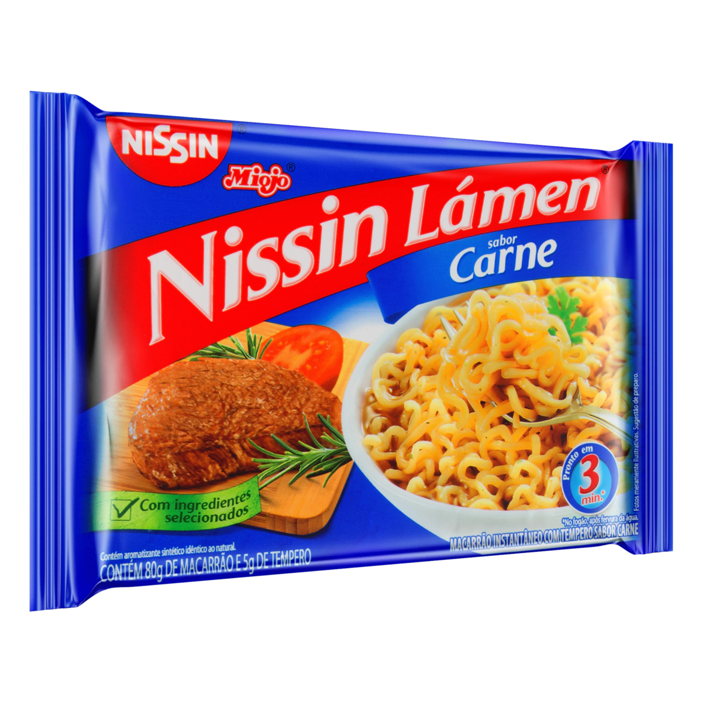

Meat Lamen

Description
A delicious nissin lamen!
Ingredients:
1 Stove
1 Pot
500 ml of water
1 Miojo
Steps:
Boil the water in the pot;
Put the in the water for 3 minutes;
Put the sauce into a lamen and mix;
Eat the delicious lamen with a fork!